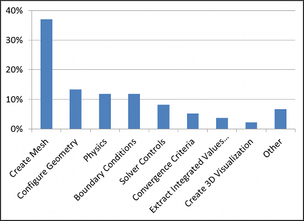

Why is CFD Difficult?
Of the 135 Symscape website visitors who voted in our latest poll, 37% cited mesh creation as the most difficult part of a Computational Fluid Dynamics (CFD) analysis. Configuring the geometry, deciding on physics and determining boundary conditions were clustered together as the next most difficult parts of CFD analysis. What is an engineer to do?
Poll Results: What is the most difficult part of CFD?
Geometry and Meshing
Configuring the geometry and creating an adequate mesh for CFD analysis continues to be a bottleneck in the overall CFD process as our poll demonstrates - combining those categories, 50% of our respondents agreed. Often the problem is caused by trying to re-purpose detailed design models tailored for manufacturing and assembly processes. Detailed design models often contain features irrelevant for CFD analysis, e.g., bolts, and forego water-tight solid models which are usually required for CFD analysis. To get the best return on your CFD investment it is better to tailor your early CAD designs for analysis, when it is relatively easy to make changes and re-assess.
Fluid Mechanics
A thorough understanding of fluid mechanics is another vital component in an engineer's knowledge toolbox to make the best use of CFD. Without a good grasp of fluid mechanics, setting up the physics for a CFD case can become a daunting and frustrating exercise.
Small Steps
Starting out with relatively simple CFD models is a great way to gain confidence and experience with CFD. Experimenting with boundary conditions, solver controls, and convergence criteria on simple, representative models is much more productive than struggling with hugely complex models. Ultimately the end goal may require the analysis of large complex models, but rather than jump straight in, consider a series of smaller steps through progressively more representative CFD models.
Resources
A recap of our CFD Novice to Expert series:
- Get Inspired - gentle preparation for the journey ahead
- Fluid Dynamics 101 - an introduction to fluid mechanics
- Fluid Dynamics 201 - more fluid mechanics
- CFD 101 - an introduction to CFD
- Hands-on CFD - hands-on with a free trial of Caedium Professional
- CFD for your Application - focus on a CFD analysis of your application
- CFD 201 - how best to use CFD within a product design cycle
Feedback
Questions? Ideas? Problems?

Recent blog posts
- CFD Simulates Distant Past
- Background on the Caedium v6.0 Release
- Long-Necked Dinosaurs Succumb To CFD
- CFD Provides Insight Into Mystery Fossils
- Wind Turbine Design According to Insects
- Runners Discover Drafting
- Wind Tunnel and CFD Reveal Best Cycling Tuck
- Active Aerodynamics on the Lamborghini Huracán Performante
- Fluidic Logic
- Stonehenge Vortex Revealed as April Fools' Day Distortion Field
 Get our Blog feed
Get our Blog feed